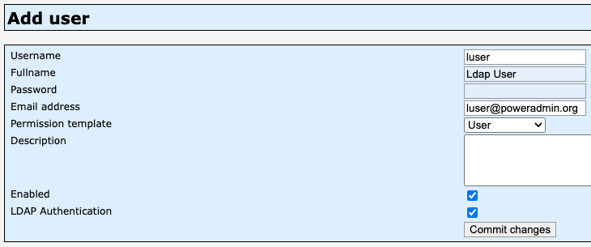
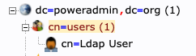

Note: This documentation is still in progress, not reviewed properly, and might contain some errors or outdated images. It's intended for the upcoming 4.0.0 release, so configuration settings might be different from previous versions.
LDAP Integration
Poweradmin supports LDAP (Lightweight Directory Access Protocol) authentication, allowing you to integrate with your existing directory service such as Active Directory or OpenLDAP.
Configuration Options
LDAP settings can be configured in the config/settings.php file under the ldap section or through individual variables in the legacy configuration format.
| Legacy variable | Modern equivalent | Default value | Description | Added in version |
|---|---|---|---|---|
| $ldap_use | ldap.enabled | false | Enable LDAP authentication | 2.1.7 |
| $ldap_debug | ldap.debug | false | Enable debug for LDAP connection | 2.1.7 |
| $ldap_uri | ldap.uri | ldap://domaincontroller.example.com | LDAP server URI | 2.1.7 |
| $ldap_basedn | ldap.base_dn | ou=users,dc=example,dc=com | The top level of the LDAP directory tree | 2.1.7 |
| $ldap_search_filter | ldap.search_filter | no default | Filter for LDAP search | 2.1.7 |
| $ldap_binddn | ldap.bind_dn | cn=admin,dc=example,dc=com | LDAP user for binding | 2.1.7 |
| $ldap_bindpw | ldap.bind_password | some_password | Password for LDAP binding user | 2.1.7 |
| $ldap_user_attribute | ldap.user_attribute | uid | Username attribute used in LDAP search filter | 2.1.7 |
| $ldap_proto | ldap.protocol_version | 3 | LDAP protocol version | 2.1.7 |
Modern Configuration Example
return [
'ldap' => [
'enabled' => true,
'debug' => false,
'uri' => 'ldap://domaincontroller.example.com',
'base_dn' => 'ou=users,dc=example,dc=com',
'bind_dn' => 'cn=admin,dc=example,dc=com',
'bind_password' => 'some_password',
'user_attribute' => 'uid',
'protocol_version' => 3,
'search_filter' => '(objectClass=account)',
],
];
LDAP Search Filter Examples
The search filter is used to limit which LDAP accounts can authenticate to Poweradmin:
// Only users that are members of the 'powerdns' group
$ldap_search_filter = '(memberOf=cn=powerdns,ou=groups,dc=poweradmin,dc=org)';
// All accounts
$ldap_search_filter = '(objectClass=account)';
// Users that are both persons and members of the 'admins' group
$ldap_search_filter = '(objectClass=person)(memberOf=cn=admins,ou=groups,dc=poweradmin,dc=org)';
// Users with 'admin' in their common name
$ldap_search_filter = '(cn=*admin*)';
Basic Setup
- Enable LDAP authentication by setting
'enabled' => truein the configuration array. - Configure your LDAP server URI and base DN.
- Set appropriate search filters based on your directory structure.
- Set binding credentials if required.
- Specify the user attribute that matches your directory structure.
Advanced Configuration
SSL/TLS Connection
For secure LDAP (LDAPS), use the following configuration:
'uri' => 'ldaps://domaincontroller.example.com',
User Attribute Mapping
Configure how Poweradmin maps LDAP attributes to user properties:
- For OpenLDAP:
'user_attribute' => 'uid' - For Active Directory:
'user_attribute' => 'sAMAccountName'
Example Directory Configurations
Active Directory
return [
'ldap' => [
'enabled' => true,
'uri' => 'ldap://ad.company.com',
'base_dn' => 'DC=company,DC=com',
'bind_dn' => 'CN=ServiceAccount,OU=Users,DC=company,DC=com',
'bind_password' => 'password',
'user_attribute' => 'sAMAccountName',
'search_filter' => '(&(objectClass=user)(sAMAccountName=%s))',
],
];
OpenLDAP
return [
'ldap' => [
'enabled' => true,
'uri' => 'ldap://ldap.company.com',
'base_dn' => 'ou=users,dc=company,dc=com',
'bind_dn' => 'cn=admin,dc=company,dc=com',
'bind_password' => 'password',
'user_attribute' => 'uid',
'search_filter' => '(&(objectClass=posixAccount)(uid=%s))',
],
];
Troubleshooting
Common LDAP issues and solutions:
- Connection Failed: Verify server URI and firewall settings
- Binding Failed: Check bind DN and password
- User Not Found: Verify search filter and user attribute
- SSL Certificate Issues: Ensure proper CA certificates are installed
Security Considerations
- Always use LDAPS (LDAP over SSL/TLS) in production environments
- Implement least privilege access for binding
- Regularly rotate LDAP binding credentials
- Consider implementing connection timeout settings
- Monitor failed authentication attempts
Adding Users to PowerAdmin
Add a user to Poweradmin:

The same user should exist in the LDAP schema:
